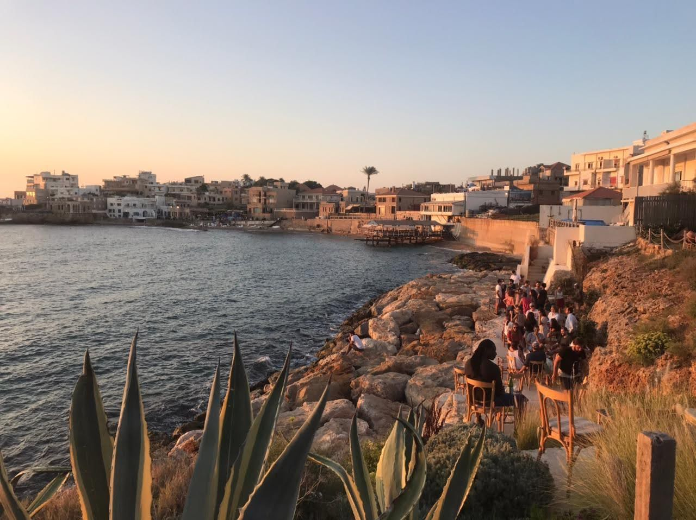

Born in an ocean town in Lebanon, living in Toronto—and this is my home on the internet.
I’m energetically optimistic about the future of geoengineering. It’s important work that I believe in. So much so that I'm currently doing PostDoc to study the potential of these systems, and recently started a company, umny.ca, to make sure this research gets out into the world faster.
I have a doctorate in mechanical engineering by training, heavily inspired by nature. I dream of a building Lebanese power grid that is not reliant on diesel generators, and creating sustainable heating and cooling systems by those affected by permafrost thawing.
